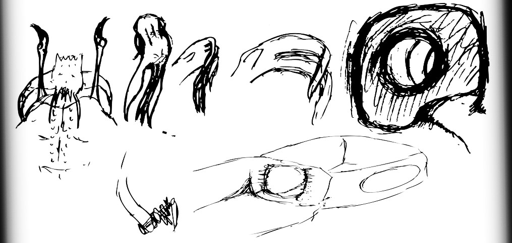

|
ID The Id represent Louis’ desire for certain actions. They are pale, squid-like in appearance, and wear little clothing. Their lairs are very much like that of ants, catacombs of tunnels and underground rooms, and share the consistency of the Id’s skin. The Id specialize in extreme emotional swings, and are organized in a dynastical fashion (meaning they have one emperor). They love to manipulate their environment, and their weapons must be partially wrapped to prevent harm from befalling any of their many tentacles. |
 |
|
EMPEROR ID The Id are varied by definition, so their emperor is in a completely different outfit on every encounter. The Id don’t wear very much, as you can see here. Empid’s cape is from that of a fallen Superego, and only he may wear it. Empid’s shell is unique to him. It conceals four long tentacles which can be used to slice at Louis from long distance. His staff is used to warp the walls of his chamber. Most Id naturally have this ability, but Empid’s staff amplifies the skill. |
SUPEREGO The Superego represent human ideas. They are heavily armored and less creative than their Id counterparts. They are eagle and owl-like, having names unique to themselves. Their governmental orientation is more communistic, functioning more as a single brotherhood where respect determines ones position in society. Each Super also has a more distinct personality. Supers don’t have wings, but they have a cape draped from either shoulder which allow them to fly. They spend more time up in the air, while the Id prefer to burrow around in the ground. Their home resides in a complex array of colorful castles. |
|
ÁLLECESTE Álleceste initially confronts Louis over a technicality, but later becomes his closest advisor. Álleceste most closely resembles the human ideal of pure intelligence, and spends most of her time in her study, analyzing books and charts. The broadsword she wields contains a Jacob's ladder, and is of her own design. It introduces an interesting gameplay element when you duel her: tricking her into shocking herself can be quite difficult, but well worth the effort. |
|
NIGHTMARES Nightmares are Louis’ self-made enemies. These creatures can be of any size, shape, and form that doesn’t fit into any of the previously mentioned categories. They tend to have a darker quality about them and need no persuasion in order to harm Louis’ psyche. |
|
DREAMS Dreams are Louis’ self-made allies. These creatures are also of any shape or from. They tend to have a lighter quality about them and must be persuaded or domesticated in order to harm Louis’ psyche. |